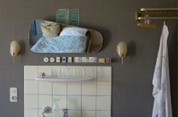
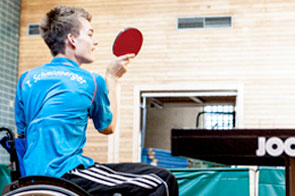

Print • SZ-Magazin
Putzen für die Selbsterkenntnis
Behnaz aus Wedding ist gläubige Baha'i. Zurzeit absolviert sie in Israel ihren "Dienst an
der Menschheit". Auf den ersten Blick passt sie tatsächlich besser in den Wedding als nach Haifa.
Mit grauer Jogginhose, Sneakers, den langen schwarzen Haaren und einem frechen Grinsen sieht Behnaz
bei unserem Treffen an diesem Tag ein bisschen aus, als würde sie in ihrer...
nachlesen
Print • FAZ
Trash-Flatrate statt Kultur-Pauschale?
Der Ausbau des Osthafens zum Modezentrum schreitet voran. Im neuen Gebäude "Labels2"
wird teilweise schon verkauft. Besonders sportliche, trendige Firmen haben sich dort
versammelt, meist in Räumen von überschaubaren Maßen. Stefan Sihler ist ein Mann der Visionen.
Geht es nach ihm, so entsteht am Osthafen eines der...
nachlesen

Print • SZ-Magazin
Grandhotel Augsburg
Der Ausbau des Osthafens zum Modezentrum schreitet voran. Im neuen Gebäude "Labels2"
wird teilweise schon verkauft. Besonders sportliche, trendige Firmen haben sich dort
versammelt, meist in Räumen von überschaubaren Maßen. Stefan Sihler...
nachlesen
Print • FAZ Trash-Flatrate statt Kultur-Pauschale? Der Ausbau des Osthafens zum Modezentrum schreitet voran. Im neuen Gebäude "Labels2"wird teilweise schon verkauft. Besonders sportliche, trendige Firmen haben sich dort versammelt, meist in Räumen von überschaubaren Maßen. Stefan Sihler ist ein Mann der Visionen. Geht es nach ihm, so entsteht am Osthafen eines der... nachlesen
Print • SZ-Magazin Grandhotel Augsburg Der Ausbau des Osthafens zum Modezentrum schreitet voran. Im neuen Gebäude "Labels2"wird teilweise schon verkauft. Besonders sportliche, trendige Firmen haben sich dort versammelt, meist in Räumen von überschaubaren Maßen. Stefan Sihler... nachlesen
Print • FAZ Trash-Flatrate statt Kultur-Pauschale? Der Ausbau des Osthafens zum Modezentrum schreitet voran. Im neuen Gebäude "Labels2"wird teilweise schon verkauft. Besonders sportliche, trendige Firmen haben sich dort versammelt, meist in Räumen von überschaubaren Maßen. Stefan Sihler ist ein Mann der Visionen. Geht es nach ihm, so entsteht am Osthafen eines der... nachlesen
Print • SZ-Magazin Grandhotel Augsburg Der Ausbau des Osthafens zum Modezentrum schreitet voran. Im neuen Gebäude "Labels2"wird teilweise schon verkauft. Besonders sportliche, trendige Firmen haben sich dort versammelt, meist in Räumen von überschaubaren Maßen. Stefan Sihler... nachlesen

Print • FAZ
Der Reiz der kleinen Größe
Der Ausbau des Osthafens zum Modezentrum schreitet voran. Im neuen Gebäude "Labels2" wird teilweise schon verkauft. Besonders sportliche, trendige Firmen haben sich dort versammelt, meist in Räumen von überschaubaren Maßen. Stefan Sihler... nachlesen
Multimedia • BR
Tanz auf dem Boden der Tatsachen
Der Ausbau des Osthafens zum Modezentrum schreitet voran. Im neuen Gebäude "Labels2"
wird teilweise schon verkauft. Besonders sportliche, trendige Firmen haben sich dort
versammelt, meist in Räumen von überschaubaren Maßen. Stefan Sihler ist ein Mann der Visionen.
Geht es nach ihm, so entsteht am Osthafen eines der...
nachlesen
Print • FAZ Der Reiz der kleinen Größe
Der Ausbau des Osthafens zum Modezentrum schreitet voran. Im neuen Gebäude "Labels2"wird teilweise schon verkauft. Besonders sportliche, trendige Firmen haben sich dort versammelt, meist in Räumen von überschaubaren Maßen. Stefan Sihler... nachlesen
Multimedia • BR Tanz auf dem Boden der Tatsachen Der Ausbau des Osthafens zum Modezentrum schreitet voran. Im neuen Gebäude "Labels2"wird teilweise schon verkauft. Besonders sportliche, trendige Firmen haben sich dort versammelt, meist in Räumen von überschaubaren Maßen. Stefan Sihler ist ein Mann der Visionen. Geht es nach ihm, so entsteht am Osthafen eines der... nachlesen
 Lea Hampel
Lea Hampel